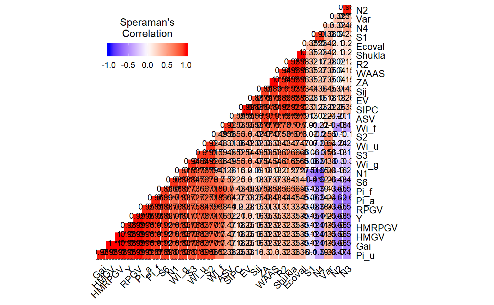
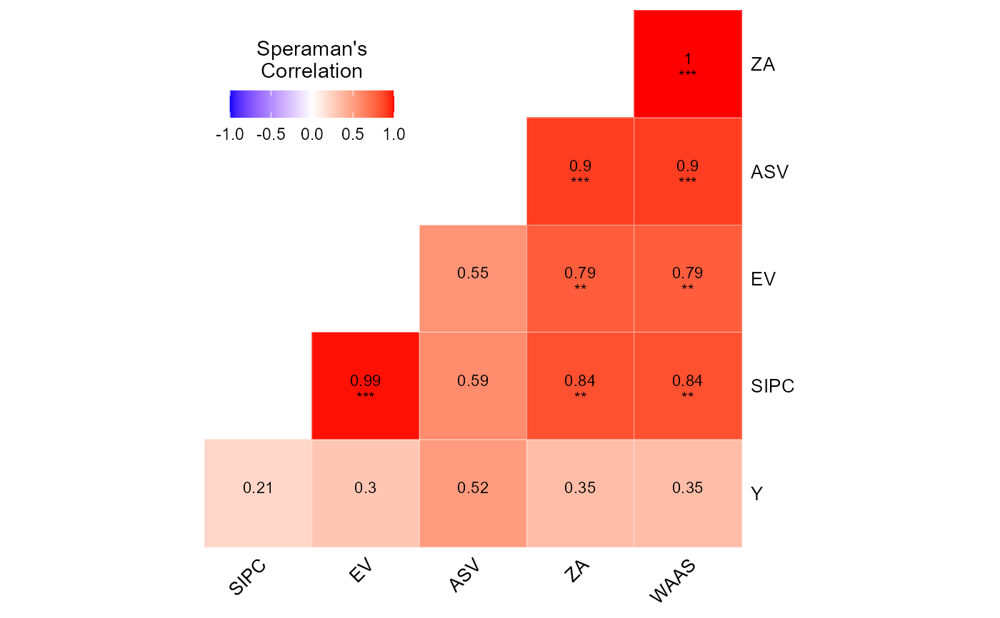

Computes the Spearman's rank correlation between the parametric and
nonparametric stability indexes computed with the function
ge_stats.
corr_stab_ind(x, stats = "all", plot = TRUE, ...)
Arguments
| x | An object of class |
|---|---|
| stats | The statistics to compute the correlation. See the section Details for more information. |
| plot | Plot the heat map with the correlations? Defaults to |
| ... | Other arguments to be passed to the function
|
Value
A list with the data (ranks) correlation, p-values and a heat map showing the correlation coefficients.
Details
The argument stats is used to chose the statistics to show
the ranks. Allowed values are "all" (All statistics, default),
"par" (Parametric statistics), "nonpar" (Non-parametric
statistics), "ammi" (AMMI-based stability statistics), or the
following values that can be combined into comma-separated character
vector. "Y" (Response variable), "Var" (Genotype's variance),
"Shukla" (Shukla's variance), "Wi_g", "Wi_f", "Wi_u"
(Annichiarrico's genotypic confidence index for all, favorable and
unfavorable environments, respectively), "Ecoval" (Wricke's
ecovalence), "Sij" (Deviations from the joint-regression analysis),
"R2" (R-squared from the joint-regression analysis), "ASV"
(AMMI-stability value), "SIPC" (sum of the absolute values of the
IPCA scores), "EV" (Average of the squared eigenvector values),
"ZA" (Absolute values of the relative contributions of the IPCAs to
the interaction), "WAAS" (Weighted Average of Absolute Scores),
"HMGV" (Harmonic mean of the genotypic value), "RPGV"
(Relative performance of the genotypic values), "HMRPGV" (Harmonic
mean of the relative performance of the genotypic values), "Pi_a",
"Pi_f", "Pi_u" (Superiority indexes for all, favorable and unfavorable
environments, respectively), "Gai" (Geometric adaptability index),
"S1" (mean of the absolute rank differences of a genotype over the n
environments), "S2" (variance among the ranks over the k
environments), "S3" (sum of the absolute deviations), "S6"
(relative sum of squares of rank for each genotype), "N1", "N2",
"N3", "N4" (Thennarasu"s statistics)).
Examples
b <- corr_stab_ind(model, stats = "ammi")# }